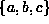

Data Structures and Algorithms
with Object-Oriented Design Patterns in Java
Data Structures and Algorithms
with Object-Oriented Design Patterns in JavaWhen dealing with directed graphs, we define two kinds of connectedness, strong and weak. Strong connectedness of a directed graph is defined as follows:
Definition (Strong Connectedness of a Directed Graph) A directed graphis strongly connected if there is a path in G between every pair of vertices in
.
For example, Figure  shows the directed graph
given by
shows the directed graph
given by
Notice that the graph is not connected!
For example, there is no path from any of the vertices in
to any of the vertices in .
Nevertheless, the graph ``looks'' connected
in the sense that it is not made of up of separate parts
in the way that the graph  in Figure is.
in Figure is.
This idea of ``looking'' connected
is what weak connectedness represents.
To define weak connectedness we need to introduce first
the notion of the undirected graph that underlies a directed graph:
Consider a directed graph  .
The underlying undirected graph is the graph
where
represents the set of undirected edges that is obtained
by removing the arrowheads from the directed edges in G:
.
The underlying undirected graph is the graph
where
represents the set of undirected edges that is obtained
by removing the arrowheads from the directed edges in G:
Figure: An weakly connected directed graph and the underlying undirected graph.
Weak connectedness of a directed graph is defined with respect to its underlying, undirected graph:
Definition (Weak Connectedness of a Directed Graph) A directed graph
For example,
since the undirected graph in Figure is connected,
the directed graph is weakly connected.
Consider what happens when we remove the edge (b,e)
from the directed graph .
The underlying undirected graph that we get is  in Figure .
Therefore,
when we remove edge (b,e) from ,
the graph that remains is neither strongly connected nor weakly connected.
in Figure .
Therefore,
when we remove edge (b,e) from ,
the graph that remains is neither strongly connected nor weakly connected.
 Copyright © 1998 by Bruno R. Preiss, P.Eng. All rights reserved.
Copyright © 1998 by Bruno R. Preiss, P.Eng. All rights reserved.